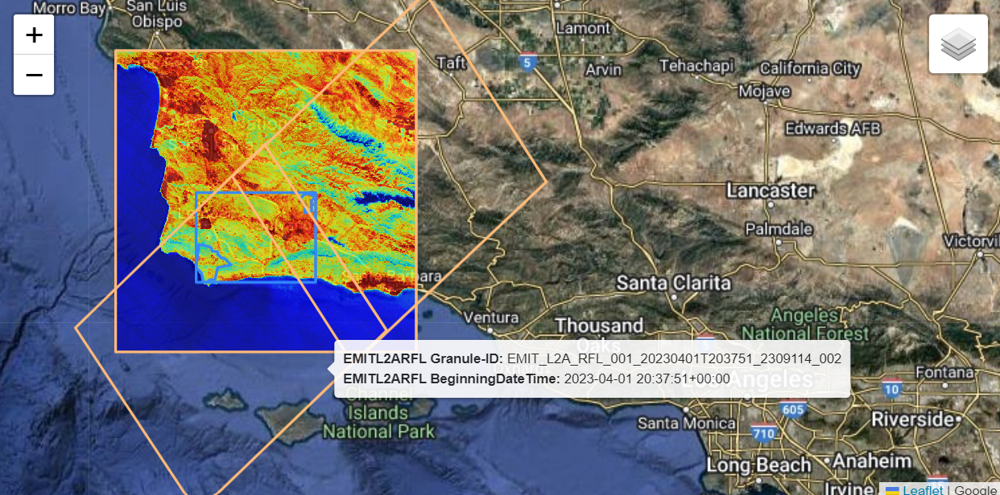

# Import required libraries
import os
import json
import folium
import earthaccess
import pandas as pd
import geopandas as gpd
import matplotlib.pyplot as plt
import matplotlib.colors as mcolors
from branca.element import Figure
from shapely.geometry import MultiPolygon, Polygon, box
from shapely.geometry.polygon import orient
from datetime import timedelta1 Finding Concurrent ECOSTRESS and EMIT Data
This notebook is part of a numbered series (01-05) that focuses specifically on using EMIT and ECOSTRESS Data together to prepare for future SBG research.
Summary
Both the ECOsystem Spaceborne Thermal Radiometer Experiment on Space Station (ECOSTRESS) and the Earth surface Mineral dust source InvesTigation (EMIT) instruments are located on the International Space Station (ISS). Their overlapping fields of view provide an unprecedented opportunity to demonstrate the compounded benefits of working with both datasets. In this notebook we will show how to search for data using the earthaccess Python library, then how to filter down results to find concurrently acquired ECOSTRESS and EMIT data. Another notebook offering similar functionality via a different approach is available: Finding Coincident Airborne and Orbital Data.

Background
The ECOSTRESS instrument is a multispectral thermal imaging radiometer designed to answer three overarching science questions:
- How is the terrestrial biosphere responding to changes in water availability?
- How do changes in diurnal vegetation water stress the global carbon cycle?
- Can agricultural vulnerability be reduced through advanced monitoring of agricultural water consumptive use and improved drought estimation?
The ECOSTRESS mission is answering these questions by accurately measuring the temperature of plants. Plants regulate their temperature by releasing water through tiny pores on their leaves called stomata. If they have sufficient water they can maintain their temperature, but if there is insufficient water, their temperatures rise and this temperature rise can be measured with ECOSTRESS. The images acquired by ECOSTRESS are the most detailed temperature images of the surface ever acquired from space and can be used to measure the temperature of an individual farmers field.
More details about ECOSTRESS and its associated products can be found on the ECOSTRESS website and ECOSTRESS product pages hosted by the Land Processes Distributed Active Archive Center (LP DAAC).
The EMIT instrument is an imaging spectrometer that measures light in visible and infrared wavelengths. These measurements display unique spectral signatures that correspond to the composition on the Earth’s surface. The EMIT mission focuses specifically on mapping the composition of minerals to better understand the effects of mineral dust throughout the Earth system and human populations now and in the future. In addition, the EMIT instrument can be used in other applications, such as mapping of greenhouse gases, snow properties, and water resources.
More details about EMIT and its associated products can be found on the EMIT website and EMIT product pages hosted by the LP DAAC.
Requirements
- NASA Earthdata Account
- No Python setup requirements if connected to the workshop cloud instance!
- Local Only Set up Python Environment - See setup_instructions.md in the /setup/ folder to set up a local compatible Python environment
Learning Objectives
- How to use earthaccess to find concurrent EMIT and ECOSTRESS data.
- How to export a list of files and download them programmatically.
Tutorial Outline
- Setup
- Searching for EMIT and ECOSTRESS Data
- Organizing and Filtering Results
- Visualizing Intersecting Coverage
- Creating a list of Results and Desired Asset URLs
- Streaming or Downloading Data
1. Setup
Import the required Python libraries.
1.2 NASA Earthdata Login Credentials
To download or stream NASA data you will need an Earthdata account, you can create one here. We will use the login function from the earthaccess library for authentication before downloading at the end of the notebook. This function can also be used to create a local .netrc file if it doesn’t exist or add your login info to an existing .netrc file. If no Earthdata Login credentials are found in the .netrc you’ll be prompted for them. This step is not necessary to conduct searches but is needed to download or stream data.
2. Searching for ECOSTRESS and EMIT Data
In this example we wish to find concurrent (coincident) EMIT_L2A_RFL and ECOSTRESS_L2T_LSTE products available from the NASA Earthdata Cloud. Conceptually, we know almost all scenes should have a corresponding scene from the other instrument since they are on the same platform. To search for available granules (scenes), we will use the earthaccess Python library, which is designed to simplify authentication and searching for NASA earth science data.
After finding the available scenes matching our search critera, we will convert our results to a GeoDataFrame and then do some filtering using the available metadata to narrow down our scenes to only those with corresponding scenes collected at the same time from the other instrument.
2.1 Define Spatial Region of Interest
For this example, our spatial region of interest (ROI) will be the a region near Santa Barbara, CA that contains the Jack and Laura Dangermond Preserve and the Sedgwick Reserve.
We will create a rectangular ROI surrounding these two reserves as well as some of the agricultural region between. Even though the shape is rectangular, we elect to search using a polygon rather than a standard bounding box in earthaccess because typically, bounding boxes will typically have a larger spatial extent, capturing a lot of area we may not be interested in. This becomes more important for searches with larger ROIs than our example here. To search using a polygon with earthaccess, we need to format our ROI as a counter-clockwise list of coordinate pairs.
Open the geojson file containing the Dangermond and Sedgwick boundaries as a geodataframe, and check the coordinate reference system (CRS) of the data.
polygon = gpd.read_file('../data/agu_workshop_roi.geojson')
polygon.crs<Geographic 2D CRS: EPSG:4326>
Name: WGS 84
Axis Info [ellipsoidal]:
- Lat[north]: Geodetic latitude (degree)
- Lon[east]: Geodetic longitude (degree)
Area of Use:
- name: World.
- bounds: (-180.0, -90.0, 180.0, 90.0)
Datum: World Geodetic System 1984 ensemble
- Ellipsoid: WGS 84
- Prime Meridian: GreenwichThe CRS is EPSG:4326 (WGS84), which is also the CRS we want the data in to submit for our search.
Next, let’s examine our polygon a bit closer.
polygon| Name | Acreage | geometry | |
|---|---|---|---|
| 0 | Sedgwick Reserve | 5874.210000 | POLYGON ((-120.04041 34.74342, -120.04122 34.7... |
| 1 | Dangermond Preserve | 24458.615397 | POLYGON ((-120.47367 34.56987, -120.47427 34.5... |
We can see this geodataframe consists of two polygons, that we want to include in our study site. We need to create an exterior boundary polygon containing these, and make sure the vertices are in counterclockwise order to submit them in our query. To do this, create a polygon consisting of all the geometries, then create a bounding rectangle. This will give us a simple exterior polygon around our two ROIs. After that, use the orient function to place our coordinate pairs in counterclockwise order.
# Merge all Polygon geometries and create external boundary
roi_poly = polygon.union_all().envelope
# Re-order vertices to counterclockwise
roi_poly = orient(roi_poly, sign=1.0)Make a GeoDataFrame consisting of the bounding box geometry.
df = pd.DataFrame({"Name":["ROI Bounding Box"]})
agu_bbox = gpd.GeoDataFrame({"Name":["ROI Bounding Box"], "geometry":[roi_poly]},crs="EPSG:4326")
agu_bbox| Name | geometry | |
|---|---|---|
| 0 | ROI Bounding Box | POLYGON ((-120.49929 34.4423, -120.01175 34.44... |
We can write this bounding box to a file for use in future notebooks.
agu_bbox.to_file('../data/roi_bbox.geojson', driver='GeoJSON')minx, miny, maxx, maxy = polygon.total_boundsminxnp.float64(-120.499289029747)We can go ahead and visualize our region of interest and the exterior boundary polygon containing ROIs.
fig_roi = Figure(width="750px", height="375px")
map_roi = folium.Map(tiles='https://mt1.google.com/vt/lyrs=y&x={x}&y={y}&z={z}', attr='Google', name='Google')
fig_roi.add_child(map_roi)
# Add Bounding Box Polygon
folium.GeoJson(agu_bbox,
name='bounding_box',
).add_to(map_roi)
# Add roi geodataframe
polygon.explore(
"Name",
popup=True,
categorical=True,
cmap='Set3',
style_kwds=dict(opacity=0.7, fillOpacity=0.4),
name="Regions of Interest",
m=map_roi
)
# Add Layer Control
map_roi.add_child(folium.LayerControl())
# Convert BBOX ROI
minx, miny, maxx, maxy = polygon.total_bounds
# Set Map Bounds
map_roi.fit_bounds(bounds=((miny, minx), (maxy, maxx)))
fig_roiAbove we can see our regions of interest (ROIs) and the exterior boundary polygon containing the ROIs that we opened. We can hover over different areas to see the name of each ROI.
Lastly, we need to convert our polygon to a list of coordinate pairs, so it will be accepted as a ‘polygon’ search parameter in earthaccess, as it expects a list of coordinate pairs in a counterclockwise order.
# Set ROI as list of exterior polygon vertices as coordinate pairs
roi = list(roi_poly.exterior.coords)2.2 Define Collections of Interest
We need to specify which products we want to search for. The best way to do this is using their concept-id. As mentioned above, we will conduct our search using the EMIT Level 2A Reflectance (EMITL2ARFL) and ECOSTRESS Level 2 Tiled Land Surface Temperature and Emissivity (ECO_L2T_LSTE). We can do some quick collection queries using earthaccess to retrieve the concept-id for each dataset.
Note: Here we use the Tiled ECOSTRESS LSTE Product. This will also work with the gridded LSTE and the swath; however, the swath product does not have a browse image for the visualization in section 4 and will require additional processing for subsequent analysis.
# EMIT Collection Query
emit_collection_query = earthaccess.collection_query().keyword('EMIT L2A Reflectance')
emit_collection_query.fields(['ShortName','EntryTitle','Version']).get()[{
"meta": {
"concept-id": "C2408750690-LPCLOUD",
"granule-count": 151308,
"provider-id": "LPCLOUD"
},
"umm": {
"ShortName": "EMITL2ARFL",
"EntryTitle": "EMIT L2A Estimated Surface Reflectance and Uncertainty and Masks 60 m V001",
"Version": "001"
}
}]# ECOSTRESS Collection Query
eco_collection_query = earthaccess.collection_query().keyword('ECOSTRESS L2 Tiled LSTE')
eco_collection_query.fields(['ShortName','EntryTitle','Version']).get()[{
"meta": {
"concept-id": "C2076090826-LPCLOUD",
"granule-count": 12900789,
"provider-id": "LPCLOUD"
},
"umm": {
"ShortName": "ECO_L2T_LSTE",
"EntryTitle": "ECOSTRESS Tiled Land Surface Temperature and Emissivity Instantaneous L2 Global 70 m V002",
"Version": "002"
}
},
{
"meta": {
"concept-id": "C2076114664-LPCLOUD",
"granule-count": 686028,
"provider-id": "LPCLOUD"
},
"umm": {
"ShortName": "ECO_L2_LSTE",
"EntryTitle": "ECOSTRESS Swath Land Surface Temperature and Emissivity Instantaneous L2 Global 70 m V002",
"Version": "002"
}
},
{
"meta": {
"concept-id": "C2090073749-LPCLOUD",
"granule-count": 1748239,
"provider-id": "LPCLOUD"
},
"umm": {
"ShortName": "ECO_L2T_STARS",
"EntryTitle": "ECOSTRESS Tiled Ancillary NDVI and Albedo L2 Global 70 m V002",
"Version": "002"
}
}]If your search returns multiple products, be sure to select the right concept-id For this example it will be the first one. We want to use the LPCLOUD ECOSTRESS Tiled Land Surface Temperature and Emissivity (concept-id: “C2076090826-LPCLOUD”). Create a list of these concept-ids for our data search.
# Data Collections for our search
# EMIT/ECO Tiled
concept_ids = ['C2408750690-LPCLOUD', 'C2076090826-LPCLOUD']
# # EMIT/ECO Swath
# concept_ids = ['C2408750690-LPCLOUD', 'C2076114664-LPCLOUD']2.3 Define Date Range
For our date range, we’ll look at data collected between January and October 2023. The date_range can be specified as a pair of dates, start and end (up to, not including).
# Define Date Range
date_range = ('2023-01-01','2023-11-01')2.4 Searching
Submit a query using earthaccess.
results = earthaccess.search_data(
concept_id=concept_ids,
polygon=roi,
temporal=date_range,
)
print(f"Granules Found: {len(results)}")Granules Found: 632Show the first 2 items from the list to see the format of the results.
results[:2][Collection: {'ShortName': 'ECO_L2T_LSTE', 'Version': '002'}
Spatial coverage: {'HorizontalSpatialDomain': {'Geometry': {'BoundingRectangles': [{'WestBoundingCoordinate': -120.295181, 'EastBoundingCoordinate': -119.065819, 'NorthBoundingCoordinate': 35.225021, 'SouthBoundingCoordinate': 34.210026}]}}}
Temporal coverage: {'RangeDateTime': {'BeginningDateTime': '2023-01-01T15:52:48.650Z', 'EndingDateTime': '2023-01-01T15:53:40.620Z'}}
Size(MB): 2.49626
Data: ['https://data.lpdaac.earthdatacloud.nasa.gov/lp-prod-protected/ECO_L2T_LSTE.002/ECOv002_L2T_LSTE_25460_016_11SKU_20230101T155248_0710_01/ECOv002_L2T_LSTE_25460_016_11SKU_20230101T155248_0710_01_water.tif', 'https://data.lpdaac.earthdatacloud.nasa.gov/lp-prod-protected/ECO_L2T_LSTE.002/ECOv002_L2T_LSTE_25460_016_11SKU_20230101T155248_0710_01/ECOv002_L2T_LSTE_25460_016_11SKU_20230101T155248_0710_01_cloud.tif', 'https://data.lpdaac.earthdatacloud.nasa.gov/lp-prod-protected/ECO_L2T_LSTE.002/ECOv002_L2T_LSTE_25460_016_11SKU_20230101T155248_0710_01/ECOv002_L2T_LSTE_25460_016_11SKU_20230101T155248_0710_01_view_zenith.tif', 'https://data.lpdaac.earthdatacloud.nasa.gov/lp-prod-protected/ECO_L2T_LSTE.002/ECOv002_L2T_LSTE_25460_016_11SKU_20230101T155248_0710_01/ECOv002_L2T_LSTE_25460_016_11SKU_20230101T155248_0710_01_height.tif', 'https://data.lpdaac.earthdatacloud.nasa.gov/lp-prod-protected/ECO_L2T_LSTE.002/ECOv002_L2T_LSTE_25460_016_11SKU_20230101T155248_0710_01/ECOv002_L2T_LSTE_25460_016_11SKU_20230101T155248_0710_01_QC.tif', 'https://data.lpdaac.earthdatacloud.nasa.gov/lp-prod-protected/ECO_L2T_LSTE.002/ECOv002_L2T_LSTE_25460_016_11SKU_20230101T155248_0710_01/ECOv002_L2T_LSTE_25460_016_11SKU_20230101T155248_0710_01_LST.tif', 'https://data.lpdaac.earthdatacloud.nasa.gov/lp-prod-protected/ECO_L2T_LSTE.002/ECOv002_L2T_LSTE_25460_016_11SKU_20230101T155248_0710_01/ECOv002_L2T_LSTE_25460_016_11SKU_20230101T155248_0710_01_LST_err.tif', 'https://data.lpdaac.earthdatacloud.nasa.gov/lp-prod-protected/ECO_L2T_LSTE.002/ECOv002_L2T_LSTE_25460_016_11SKU_20230101T155248_0710_01/ECOv002_L2T_LSTE_25460_016_11SKU_20230101T155248_0710_01_EmisWB.tif'],
Collection: {'ShortName': 'ECO_L2T_LSTE', 'Version': '002'}
Spatial coverage: {'HorizontalSpatialDomain': {'Geometry': {'BoundingRectangles': [{'WestBoundingCoordinate': -120.29518354417259, 'EastBoundingCoordinate': -119.06581640006657, 'NorthBoundingCoordinate': 35.22502010920582, 'SouthBoundingCoordinate': 34.210027193369996}]}}}
Temporal coverage: {'RangeDateTime': {'BeginningDateTime': '2023-01-01T15:52:48.650Z', 'EndingDateTime': '2023-01-01T15:53:40.620Z'}}
Size(MB): 2.38
Data: ['https://data.lpdaac.earthdatacloud.nasa.gov/lp-prod-protected/ECO_L2T_LSTE.002/ECOv002_L2T_LSTE_25460_016_11SKU_20230101T155248_0712_02/ECOv002_L2T_LSTE_25460_016_11SKU_20230101T155248_0712_02_water.tif', 'https://data.lpdaac.earthdatacloud.nasa.gov/lp-prod-protected/ECO_L2T_LSTE.002/ECOv002_L2T_LSTE_25460_016_11SKU_20230101T155248_0712_02/ECOv002_L2T_LSTE_25460_016_11SKU_20230101T155248_0712_02_cloud.tif', 'https://data.lpdaac.earthdatacloud.nasa.gov/lp-prod-protected/ECO_L2T_LSTE.002/ECOv002_L2T_LSTE_25460_016_11SKU_20230101T155248_0712_02/ECOv002_L2T_LSTE_25460_016_11SKU_20230101T155248_0712_02_view_zenith.tif', 'https://data.lpdaac.earthdatacloud.nasa.gov/lp-prod-protected/ECO_L2T_LSTE.002/ECOv002_L2T_LSTE_25460_016_11SKU_20230101T155248_0712_02/ECOv002_L2T_LSTE_25460_016_11SKU_20230101T155248_0712_02_height.tif', 'https://data.lpdaac.earthdatacloud.nasa.gov/lp-prod-protected/ECO_L2T_LSTE.002/ECOv002_L2T_LSTE_25460_016_11SKU_20230101T155248_0712_02/ECOv002_L2T_LSTE_25460_016_11SKU_20230101T155248_0712_02_QC.tif', 'https://data.lpdaac.earthdatacloud.nasa.gov/lp-prod-protected/ECO_L2T_LSTE.002/ECOv002_L2T_LSTE_25460_016_11SKU_20230101T155248_0712_02/ECOv002_L2T_LSTE_25460_016_11SKU_20230101T155248_0712_02_LST.tif', 'https://data.lpdaac.earthdatacloud.nasa.gov/lp-prod-protected/ECO_L2T_LSTE.002/ECOv002_L2T_LSTE_25460_016_11SKU_20230101T155248_0712_02/ECOv002_L2T_LSTE_25460_016_11SKU_20230101T155248_0712_02_LST_err.tif', 'https://data.lpdaac.earthdatacloud.nasa.gov/lp-prod-protected/ECO_L2T_LSTE.002/ECOv002_L2T_LSTE_25460_016_11SKU_20230101T155248_0712_02/ECOv002_L2T_LSTE_25460_016_11SKU_20230101T155248_0712_02_EmisWB.tif']]3. Organizing and Filtering Results
As we can see from above, the results object contains a list of objects with metadata and links. We can convert this to a more readable format, a dataframe. In addition, we can make it a GeoDataFrame by taking the spatial metadata and creating a shapely polygon representing the spatial coverage, and further customize which information we want to use from other metadata fields.
First, we’ll define a couple functions to help us make the conversion. One to extract the geometry from the metadata, one to extract the browse image (quicklook) url, and one to make our conversion to a GeoDataFrame.
# Functions to Build Dataframe
def get_shapely_object(result: earthaccess.results.DataGranule):
"""
Create a shapely polygon of spatial coverage from results metadata.
Will work for BoundingRectangles or GPolygons.
"""
# Get Geometry Keys
geo = result["umm"]["SpatialExtent"]["HorizontalSpatialDomain"]["Geometry"]
keys = geo.keys()
if "BoundingRectangles" in keys:
bounding_rectangle = geo["BoundingRectangles"][0]
# Create bbox tuple
bbox_coords = (
bounding_rectangle["WestBoundingCoordinate"],
bounding_rectangle["SouthBoundingCoordinate"],
bounding_rectangle["EastBoundingCoordinate"],
bounding_rectangle["NorthBoundingCoordinate"],
)
# Create shapely geometry from bbox
shape = box(*bbox_coords, ccw=True)
elif "GPolygons" in keys:
points = geo["GPolygons"][0]["Boundary"]["Points"]
# Create shapely geometry from polygons
shape = Polygon([[p["Longitude"], p["Latitude"]] for p in points])
else:
raise ValueError(
"Provided result does not contain bounding boxes/polygons or is incompatible."
)
return shape
def get_png(result: earthaccess.results.DataGranule):
"""
Retrieve a png browse image if it exists or first jpg in list of urls
"""
https_links = [link for link in result.dataviz_links() if "https" in link]
if len(https_links) == 1:
browse = https_links[0]
elif len(https_links) == 0:
browse = "no browse image"
else:
browse = [png for png in https_links if ".png" in png][0]
if any(browse) == 'no browse image':
print("Some granules have no browse imagery.")
return browse
def results_to_gdf(results: list):
"""
Takes a list of results from earthaccess and converts to a geodataframe.
"""
# Create Dataframe of Results Metadata
results_df = pd.json_normalize(results)
# Shorten column Names
results_df.columns = [
col.split(".")[-1] if "." in col else col for col in results_df.columns
]
# Create shapely polygons for result
geometries = [
get_shapely_object(results[index]) for index in results_df.index.to_list()
]
# Convert to GeoDataframe
gdf = gpd.GeoDataFrame(results_df, geometry=geometries, crs="EPSG:4326")
# Add browse imagery and data links and product shortname
gdf["browse"] = [get_png(granule) for granule in results]
gdf["shortname"] = [
result["umm"]["CollectionReference"]["ShortName"] for result in results
]
gdf["data"] = [granule.data_links() for granule in results]
return gdfUse our functions to create a GeoDataFrame.
gdf = results_to_gdf(results)Preview our geodataframe to get an idea what it looks like.
pd.set_option('display.max_columns', None)
gdf.head()| size | concept-type | concept-id | revision-id | native-id | collection-concept-id | provider-id | format | revision-date | BeginningDateTime | EndingDateTime | OrbitCalculatedSpatialDomains | GranuleUR | AdditionalAttributes | MeasuredParameters | BoundingRectangles | ProviderDates | ShortName | Version | PGEVersion | RelatedUrls | DayNightFlag | Identifiers | ProductionDateTime | ArchiveAndDistributionInformation | Platforms | URL | Name | Version | GPolygons | PGEName | CloudCover | geometry | browse | shortname | data | |
|---|---|---|---|---|---|---|---|---|---|---|---|---|---|---|---|---|---|---|---|---|---|---|---|---|---|---|---|---|---|---|---|---|---|---|---|---|
| 0 | 2.496260 | granule | G2581836170-LPCLOUD | 2 | ECOv002_L2T_LSTE_25460_016_11SKU_20230101T1552... | C2076090826-LPCLOUD | LPCLOUD | application/echo10+xml | 2024-01-20T15:57:11.266Z | 2023-01-01T15:52:48.650Z | 2023-01-01T15:53:40.620Z | [{'BeginOrbitNumber': 25460, 'EndOrbitNumber':... | ECOv002_L2T_LSTE_25460_016_11SKU_20230101T1552... | [{'Name': 'identifier_product_doi', 'Values': ... | [{'ParameterName': 'L2T_LSTE'}] | [{'WestBoundingCoordinate': -120.295181, 'East... | [{'Date': '2023-01-07T04:45:46.314Z', 'Type': ... | ECO_L2T_LSTE | 002 | v1.4.8 | [{'URL': 'https://data.lpdaac.earthdatacloud.n... | Day | [{'Identifier': 'ECOv002_L2T_LSTE_25460_016_11... | 2023-01-02T10:54:07.207Z | [{'Name': 'Not provided', 'Size': 2.49626, 'Si... | [{'ShortName': 'ISS', 'Instruments': [{'ShortN... | https://cdn.earthdata.nasa.gov/umm/granule/v1.6.6 | UMM-G | 1.6.6 | NaN | NaN | NaN | POLYGON ((-119.06582 34.21003, -119.06582 35.2... | https://data.lpdaac.earthdatacloud.nasa.gov/lp... | ECO_L2T_LSTE | [https://data.lpdaac.earthdatacloud.nasa.gov/l... |
| 1 | 2.380000 | granule | G3452958201-LPCLOUD | 1 | ECOv002_L2T_LSTE_25460_016_11SKU_20230101T1552... | C2076090826-LPCLOUD | LPCLOUD | application/echo10+xml | 2025-03-17T21:23:46.945Z | 2023-01-01T15:52:48.650Z | 2023-01-01T15:53:40.620Z | [{'BeginOrbitNumber': 25460, 'EndOrbitNumber':... | ECOv002_L2T_LSTE_25460_016_11SKU_20230101T1552... | [{'Name': 'identifier_product_doi', 'Values': ... | [{'ParameterName': 'ECO_L2T_LSTE'}] | [{'WestBoundingCoordinate': -120.2951835441725... | [{'Date': '2025-01-14T22:26:07.174Z', 'Type': ... | ECO_L2T_LSTE | 002 | v1.12.4 | [{'URL': 'https://data.lpdaac.earthdatacloud.n... | Day | [{'Identifier': 'ECOv002_L2T_LSTE_25460_016_11... | 2025-01-14T22:26:07.174Z | [{'Name': 'Not provided', 'Size': 2.38, 'SizeU... | [{'ShortName': 'ISS', 'Instruments': [{'ShortN... | https://cdn.earthdata.nasa.gov/umm/granule/v1.6.6 | UMM-G | 1.6.6 | NaN | NaN | NaN | POLYGON ((-119.06582 34.21003, -119.06582 35.2... | https://data.lpdaac.earthdatacloud.nasa.gov/lp... | ECO_L2T_LSTE | [https://data.lpdaac.earthdatacloud.nasa.gov/l... |
| 2 | 0.292531 | granule | G2586136519-LPCLOUD | 2 | ECOv002_L2T_LSTE_25486_005_10SGD_20230103T0743... | C2076090826-LPCLOUD | LPCLOUD | application/echo10+xml | 2024-01-20T17:35:56.995Z | 2023-01-03T07:43:30.510Z | 2023-01-03T07:44:22.480Z | [{'BeginOrbitNumber': 25486, 'EndOrbitNumber':... | ECOv002_L2T_LSTE_25486_005_10SGD_20230103T0743... | [{'Name': 'identifier_product_doi', 'Values': ... | [{'ParameterName': 'L2T_LSTE'}] | [{'WestBoundingCoordinate': -120.828926, 'East... | [{'Date': '2023-01-10T15:47:57.390Z', 'Type': ... | ECO_L2T_LSTE | 002 | v1.4.8 | [{'URL': 'https://data.lpdaac.earthdatacloud.n... | Night | [{'Identifier': 'ECOv002_L2T_LSTE_25486_005_10... | 2023-01-04T15:18:13.022Z | [{'Name': 'Not provided', 'Size': 0.292531, 'S... | [{'ShortName': 'ISS', 'Instruments': [{'ShortN... | https://cdn.earthdata.nasa.gov/umm/granule/v1.6.6 | UMM-G | 1.6.6 | NaN | NaN | NaN | POLYGON ((-119.59844 34.20719, -119.59844 35.2... | https://data.lpdaac.earthdatacloud.nasa.gov/lp... | ECO_L2T_LSTE | [https://data.lpdaac.earthdatacloud.nasa.gov/l... |
| 3 | 0.290000 | granule | G3452806592-LPCLOUD | 1 | ECOv002_L2T_LSTE_25486_005_10SGD_20230103T0743... | C2076090826-LPCLOUD | LPCLOUD | application/echo10+xml | 2025-03-17T19:18:49.303Z | 2023-01-03T07:43:30.511Z | 2023-01-03T07:44:22.481Z | [{'BeginOrbitNumber': 25486, 'EndOrbitNumber':... | ECOv002_L2T_LSTE_25486_005_10SGD_20230103T0743... | [{'Name': 'identifier_product_doi', 'Values': ... | [{'ParameterName': 'ECO_L2T_LSTE'}] | [{'WestBoundingCoordinate': -120.8289272688636... | [{'Date': '2025-01-15T00:21:58.289Z', 'Type': ... | ECO_L2T_LSTE | 002 | v1.12.4 | [{'URL': 'https://data.lpdaac.earthdatacloud.n... | Night | [{'Identifier': 'ECOv002_L2T_LSTE_25486_005_10... | 2025-01-15T00:21:58.289Z | [{'Name': 'Not provided', 'Size': 0.29, 'SizeU... | [{'ShortName': 'ISS', 'Instruments': [{'ShortN... | https://cdn.earthdata.nasa.gov/umm/granule/v1.6.6 | UMM-G | 1.6.6 | NaN | NaN | NaN | POLYGON ((-119.59844 34.20719, -119.59844 35.2... | https://data.lpdaac.earthdatacloud.nasa.gov/lp... | ECO_L2T_LSTE | [https://data.lpdaac.earthdatacloud.nasa.gov/l... |
| 4 | 8.495430 | granule | G2586136993-LPCLOUD | 2 | ECOv002_L2T_LSTE_25486_006_11SKU_20230103T0744... | C2076090826-LPCLOUD | LPCLOUD | application/echo10+xml | 2024-01-20T17:36:01.364Z | 2023-01-03T07:44:22.480Z | 2023-01-03T07:45:14.450Z | [{'BeginOrbitNumber': 25486, 'EndOrbitNumber':... | ECOv002_L2T_LSTE_25486_006_11SKU_20230103T0744... | [{'Name': 'identifier_product_doi', 'Values': ... | [{'ParameterName': 'L2T_LSTE'}] | [{'WestBoundingCoordinate': -120.295181, 'East... | [{'Date': '2023-01-10T15:47:58.210Z', 'Type': ... | ECO_L2T_LSTE | 002 | v1.4.8 | [{'URL': 'https://data.lpdaac.earthdatacloud.n... | Night | [{'Identifier': 'ECOv002_L2T_LSTE_25486_006_11... | 2023-01-04T15:18:08.548Z | [{'Name': 'Not provided', 'Size': 8.49543, 'Si... | [{'ShortName': 'ISS', 'Instruments': [{'ShortN... | https://cdn.earthdata.nasa.gov/umm/granule/v1.6.6 | UMM-G | 1.6.6 | NaN | NaN | NaN | POLYGON ((-119.06582 34.21003, -119.06582 35.2... | https://data.lpdaac.earthdatacloud.nasa.gov/lp... | ECO_L2T_LSTE | [https://data.lpdaac.earthdatacloud.nasa.gov/l... |
There are a lot of columns with data that is not relevant to our goal, so we can drop those. To do that, list the names of columns.
# List Column Names
gdf.columnsIndex(['size', 'concept-type', 'concept-id', 'revision-id', 'native-id',
'collection-concept-id', 'provider-id', 'format', 'revision-date',
'BeginningDateTime', 'EndingDateTime', 'OrbitCalculatedSpatialDomains',
'GranuleUR', 'AdditionalAttributes', 'MeasuredParameters',
'BoundingRectangles', 'ProviderDates', 'ShortName', 'Version',
'PGEVersion', 'RelatedUrls', 'DayNightFlag', 'Identifiers',
'ProductionDateTime', 'ArchiveAndDistributionInformation', 'Platforms',
'URL', 'Name', 'Version', 'GPolygons', 'PGEName', 'CloudCover',
'geometry', 'browse', 'shortname', 'data'],
dtype='object')Now create a list of columns to keep and use it to filter the dataframe.
# Create a list of columns to keep
keep_cols = [
"native-id",
"collection-concept-id",
"BeginningDateTime",
"EndingDateTime",
"CloudCover",
"DayNightFlag",
"geometry",
"browse",
"shortname",
"data",
]
# Remove unneeded columns
gdf = gdf[gdf.columns.intersection(keep_cols)]
gdf.head()| native-id | collection-concept-id | BeginningDateTime | EndingDateTime | DayNightFlag | CloudCover | geometry | browse | shortname | data | |
|---|---|---|---|---|---|---|---|---|---|---|
| 0 | ECOv002_L2T_LSTE_25460_016_11SKU_20230101T1552... | C2076090826-LPCLOUD | 2023-01-01T15:52:48.650Z | 2023-01-01T15:53:40.620Z | Day | NaN | POLYGON ((-119.06582 34.21003, -119.06582 35.2... | https://data.lpdaac.earthdatacloud.nasa.gov/lp... | ECO_L2T_LSTE | [https://data.lpdaac.earthdatacloud.nasa.gov/l... |
| 1 | ECOv002_L2T_LSTE_25460_016_11SKU_20230101T1552... | C2076090826-LPCLOUD | 2023-01-01T15:52:48.650Z | 2023-01-01T15:53:40.620Z | Day | NaN | POLYGON ((-119.06582 34.21003, -119.06582 35.2... | https://data.lpdaac.earthdatacloud.nasa.gov/lp... | ECO_L2T_LSTE | [https://data.lpdaac.earthdatacloud.nasa.gov/l... |
| 2 | ECOv002_L2T_LSTE_25486_005_10SGD_20230103T0743... | C2076090826-LPCLOUD | 2023-01-03T07:43:30.510Z | 2023-01-03T07:44:22.480Z | Night | NaN | POLYGON ((-119.59844 34.20719, -119.59844 35.2... | https://data.lpdaac.earthdatacloud.nasa.gov/lp... | ECO_L2T_LSTE | [https://data.lpdaac.earthdatacloud.nasa.gov/l... |
| 3 | ECOv002_L2T_LSTE_25486_005_10SGD_20230103T0743... | C2076090826-LPCLOUD | 2023-01-03T07:43:30.511Z | 2023-01-03T07:44:22.481Z | Night | NaN | POLYGON ((-119.59844 34.20719, -119.59844 35.2... | https://data.lpdaac.earthdatacloud.nasa.gov/lp... | ECO_L2T_LSTE | [https://data.lpdaac.earthdatacloud.nasa.gov/l... |
| 4 | ECOv002_L2T_LSTE_25486_006_11SKU_20230103T0744... | C2076090826-LPCLOUD | 2023-01-03T07:44:22.480Z | 2023-01-03T07:45:14.450Z | Night | NaN | POLYGON ((-119.06582 34.21003, -119.06582 35.2... | https://data.lpdaac.earthdatacloud.nasa.gov/lp... | ECO_L2T_LSTE | [https://data.lpdaac.earthdatacloud.nasa.gov/l... |
With our dataframe cleaned up a bit, we can clearly see the available metadata needed to do some filtering. Before conducting our concurrent data filtering, first we’ll want to do some product specific filtering.
Separate the results into two dataframes – one for ECOTRESS and one for EMIT, and print the number of results for each so we can monitor how many granules remain in our results.
# View unique Products
gdf['shortname'].unique()array(['ECO_L2T_LSTE', 'EMITL2ARFL'], dtype=object)# Split into two dataframes - ECO and EMIT
eco_gdf = gdf[gdf['shortname']=='ECO_L2T_LSTE']
emit_gdf = gdf[gdf['shortname']=='EMITL2ARFL']
print(f'{eco_gdf["shortname"].iloc[0]} Granules: {eco_gdf.shape[0]} \n{emit_gdf["shortname"].iloc[0]} Granules: {emit_gdf.shape[0]}')ECO_L2T_LSTE Granules: 597
EMITL2ARFL Granules: 35Let’s take a look at ECOSTRESS specific filtering first. Since we’re using the ECOSTRESS tiled data (ECO_L2T LSTE) data, there are two tiles available for our area of interest because its located where the tiles overlap and we’ll want to choose a tile if it fully contains our region of interest. Additionally, a caveat with this ECOSTRESS dataset is that there are currently multiple builds available for a scene (as of 2025-05-12). For this use case, we will select the newest build available, and eliminate duplicate granules from older builds.
Select a single tile tile, then remove duplicate scenes produced with older software builds from our results.
# Select an ECOSTRESS Tile
eco_gdf = eco_gdf[eco_gdf["native-id"].str.contains("10SGD")]
# Remove Duplicate Granules from Older Builds
def filter_eco_duplicates(gdf):
"""
ECOSTRESS data currently have some duplicate granules in the archive
from different software builds. This removes the duplicates a dataframe of reuslts.
Based on ECO file naming conventions.
"""
df = gdf["native-id"].str.rsplit("_", n=2, expand=True)
df.columns = ["base", "build_major", "build_minor"]
df["build_major"] = df["build_major"].astype(int)
df["build_minor"] = df["build_minor"].astype(int)
df["native-id"] = gdf["native-id"]
# Group and keep latest
idx = df.groupby("base")[["build_major", "build_minor"]].idxmax().build_major
gdf = gdf[gdf["native-id"].isin(df.loc[idx, "native-id"])]
return gdf
eco_gdf = filter_eco_duplicates(eco_gdf)
# Show change in results quantity
print(f'{eco_gdf["shortname"].iloc[0]} Granules: {eco_gdf.shape[0]} \n{emit_gdf["shortname"].iloc[0]} Granules: {emit_gdf.shape[0]}')ECO_L2T_LSTE Granules: 163
EMITL2ARFL Granules: 35Notice that this reduced our ECOSTRESS results quantity of by quite a bit.
Now, lets do some filtering of EMIT scenes as well. For EMIT we can utilize the CloudCover field from the results metadata to eliminate scenes with a large proportion of cloud-cover. This field is not available for ECOSTRESS.
# Cloud Filter using EMIT Metadata - Not available for ECOSTRESS
emit_gdf = emit_gdf[emit_gdf["CloudCover"] <= 80]
print(f'{eco_gdf["shortname"].iloc[0]} Granules: {eco_gdf.shape[0]} \n{emit_gdf["shortname"].iloc[0]} Granules: {emit_gdf.shape[0]}')ECO_L2T_LSTE Granules: 163
EMITL2ARFL Granules: 21Finally, we want to apply our concurrent filtering to ensure each entry in our ECOSTRESS dataframe has a corresponding entry in the EMIT dataframe. Since the EMIT acquisition mask has been added to ECOSTRESS, in most cases if EMIT is collecting data, so will ECOSTRESS. This means we can use the time window from the metadata provided by the BegginningDateTime and EndDateTime columns to help us accomplish this. But, since we are working with the tiled ECOSTRESS product, there are cases where the tiles may not spatially intersect with an EMIT scene, even though the acquisition time windows intersect. We need to:
- Ensure the temporal extents of granules from each instrument intersect.
- Ensure that the spatial extents of granules from each instrument intersect (due to the tiling scheme).
First write a function to convert the BeginningDateTime and EndDateTime to a datetime object.
You may have noticed that the date format is similar for ECOSTRESS and EMIT, but the ECOSTRESS data also includes fractional seconds. If using an different version of
pandas, you may need to drop theformat='ISO8601'argument to theto_datetimefunction, as shown in the commented-out line.
# Define Function to Convert Columns to datetime
def convert_col_dt(df:pd.DataFrame, columns:list, fmt="ISO8601"):
"""
Convert specified columns from string to a datetime. Default format of ISO8601.
"""
for col in columns:
df[col] = pd.to_datetime(df[col], format=fmt)
return dfNow we can write a function to find spatial and temporal interections of the data. To do this, we’ll merge the dataframes spatially to find intersecting geometries from our emit_gdf and eco_gdf, providing a suffix for each GeoDataFrame so columns will be named in a meaninful way. Then we’ll use the temporal extents defined by BeginningDateTime and EndingDateTime to evaluate if granules from each data product intersect temporally.
Finding intersections between temporal extents of a granule works great for finding concurrent ECOSTRESS and EMIT because they are both on the ISS and acquiring data within seconds of each other, but for other applications we may want to find data from another orbiting instrument where an overpass falls within an hour or day of acquisition. We can accomplish this by manually providing a timedelta, then using the temporal extent from the metadata to see if the temporal extent from each data product falls within the provided timedelta. Since this may be a common use case, we’ve added that parameter to the function below.
One more addition to the function below is keeping all of our geometries. By default, the gpd.sjoin function only keeps the left dataframe geometry. In the function this has been modified to keep both left and right geometries, as well as a merged geometry. This will allow us to verify our results and also visualize these intersections.
Note that the spatial merge and temporal filtering can be computationally intensive. If the area of interest is very large or initial search parameters have a long temporal range, breaking down the initial search into sections spatially or temporally is recommended.
def find_concurrent_scenes(lgdf, rgdf, time_delta=None):
"""
Finds the concurrent scenes.
lgdf: a geodataframe of earthaccess results
rgdf: a second geodataframe ofearthaccess results
lsuffix: appended to lgdf column names
rsuffix: appended to rgdf column names
timedelta (seconds): optional - an acceptable time-range between temporal
extents of both products
"""
# Get left and right suffixes
lsuffix = lgdf["shortname"].iloc[0]
rsuffix = rgdf["shortname"].iloc[0]
# Copy lgdf, rgdf Geometry
lgdf.loc[:,f"geometry_{lsuffix}"] = lgdf.geometry
rgdf.loc[:,f"geometry_{rsuffix}"] = rgdf.geometry
# Conduct Spatial Join
joined = gpd.sjoin(
lgdf,
rgdf,
how="inner",
predicate="intersects",
lsuffix=lsuffix,
rsuffix=rsuffix,
)
# Convert Datetime fields
date_columns = [
f"BeginningDateTime_{lsuffix}",
f"BeginningDateTime_{rsuffix}",
f"EndingDateTime_{lsuffix}",
f"EndingDateTime_{rsuffix}",
]
joined = convert_col_dt(joined, date_columns)
# Filter Based on Temporal Extents
if time_delta:
td = timedelta(seconds=time_delta)
joined[f"MidDateTime_{lsuffix}"] = (
joined[f"BeginningDateTime_{lsuffix}"]
+ (
joined[f"EndingDateTime_{lsuffix}"]
- joined[f"BeginningDateTime_{lsuffix}"]
)
/ 2
)
joined[f"MidDateTime_{rsuffix}"] = (
joined[f"BeginningDateTime_{rsuffix}"]
+ (
joined[f"EndingDateTime_{rsuffix}"]
- joined[f"BeginningDateTime_{rsuffix}"]
)
/ 2
)
concurrent_df = joined[
abs(joined[f"MidDateTime_{lsuffix}"] - joined[f"MidDateTime_{rsuffix}"])
<= td
]
else:
concurrent_df = joined[
(
joined[f"BeginningDateTime_{lsuffix}"]
<= joined[f"EndingDateTime_{rsuffix}"]
)
& (
joined[f"EndingDateTime_{lsuffix}"]
>= joined[f"BeginningDateTime_{rsuffix}"]
)
]
# Combine Geometry
concurrent_df.loc[:, "geometry"] = concurrent_df.apply(
lambda row: MultiPolygon(
[row[f"geometry_{lsuffix}"], row[f"geometry_{rsuffix}"]]
),
axis=1,
)
return concurrent_dfRun the concurrent_df function. Since we’re working with ECOSTRESS and EMIT, we don’t need to provide the timedelta argument.
# Find Concurrent Scenes
concurrent_df = find_concurrent_scenes(eco_gdf, emit_gdf , time_delta=60*60*12)
concurrent_df.head()| native-id_ECO_L2T_LSTE | collection-concept-id_ECO_L2T_LSTE | BeginningDateTime_ECO_L2T_LSTE | EndingDateTime_ECO_L2T_LSTE | DayNightFlag_ECO_L2T_LSTE | CloudCover_ECO_L2T_LSTE | geometry | browse_ECO_L2T_LSTE | shortname_ECO_L2T_LSTE | data_ECO_L2T_LSTE | geometry_ECO_L2T_LSTE | index_EMITL2ARFL | native-id_EMITL2ARFL | collection-concept-id_EMITL2ARFL | BeginningDateTime_EMITL2ARFL | EndingDateTime_EMITL2ARFL | DayNightFlag_EMITL2ARFL | CloudCover_EMITL2ARFL | browse_EMITL2ARFL | shortname_EMITL2ARFL | data_EMITL2ARFL | geometry_EMITL2ARFL | MidDateTime_ECO_L2T_LSTE | MidDateTime_EMITL2ARFL | |
|---|---|---|---|---|---|---|---|---|---|---|---|---|---|---|---|---|---|---|---|---|---|---|---|---|
| 70 | ECOv002_L2T_LSTE_26223_011_10SGD_20230219T2028... | C2076090826-LPCLOUD | 2023-02-19 20:28:51.310000+00:00 | 2023-02-19 20:29:43.280000+00:00 | Day | NaN | MULTIPOLYGON (((-119.59844 34.20719, -119.5984... | https://data.lpdaac.earthdatacloud.nasa.gov/lp... | ECO_L2T_LSTE | [https://data.lpdaac.earthdatacloud.nasa.gov/l... | POLYGON ((-119.59844 34.20719, -119.59844 35.2... | 71 | EMIT_L2A_RFL_001_20230219T202939_2305013_002 | C2408750690-LPCLOUD | 2023-02-19 20:29:39+00:00 | 2023-02-19 20:29:51+00:00 | Day | 47.0 | https://data.lpdaac.earthdatacloud.nasa.gov/lp... | EMITL2ARFL | [https://data.lpdaac.earthdatacloud.nasa.gov/l... | POLYGON ((-120.70791 35.54348, -121.19894 34.9... | 2023-02-19 20:29:17.295000+00:00 | 2023-02-19 20:29:45+00:00 |
| 70 | ECOv002_L2T_LSTE_26223_011_10SGD_20230219T2028... | C2076090826-LPCLOUD | 2023-02-19 20:28:51.310000+00:00 | 2023-02-19 20:29:43.280000+00:00 | Day | NaN | MULTIPOLYGON (((-119.59844 34.20719, -119.5984... | https://data.lpdaac.earthdatacloud.nasa.gov/lp... | ECO_L2T_LSTE | [https://data.lpdaac.earthdatacloud.nasa.gov/l... | POLYGON ((-119.59844 34.20719, -119.59844 35.2... | 74 | EMIT_L2A_RFL_001_20230219T202951_2305013_003 | C2408750690-LPCLOUD | 2023-02-19 20:29:51+00:00 | 2023-02-19 20:30:14+00:00 | Day | 67.0 | https://data.lpdaac.earthdatacloud.nasa.gov/lp... | EMITL2ARFL | [https://data.lpdaac.earthdatacloud.nasa.gov/l... | POLYGON ((-120.04838 35.03646, -120.54523 34.4... | 2023-02-19 20:29:17.295000+00:00 | 2023-02-19 20:30:02.500000+00:00 |
| 72 | ECOv002_L2T_LSTE_26223_012_10SGD_20230219T2029... | C2076090826-LPCLOUD | 2023-02-19 20:29:43.280000+00:00 | 2023-02-19 20:30:35.250000+00:00 | Day | NaN | MULTIPOLYGON (((-119.59844 34.20719, -119.5984... | https://data.lpdaac.earthdatacloud.nasa.gov/lp... | ECO_L2T_LSTE | [https://data.lpdaac.earthdatacloud.nasa.gov/l... | POLYGON ((-119.59844 34.20719, -119.59844 35.2... | 71 | EMIT_L2A_RFL_001_20230219T202939_2305013_002 | C2408750690-LPCLOUD | 2023-02-19 20:29:39+00:00 | 2023-02-19 20:29:51+00:00 | Day | 47.0 | https://data.lpdaac.earthdatacloud.nasa.gov/lp... | EMITL2ARFL | [https://data.lpdaac.earthdatacloud.nasa.gov/l... | POLYGON ((-120.70791 35.54348, -121.19894 34.9... | 2023-02-19 20:30:09.265000+00:00 | 2023-02-19 20:29:45+00:00 |
| 72 | ECOv002_L2T_LSTE_26223_012_10SGD_20230219T2029... | C2076090826-LPCLOUD | 2023-02-19 20:29:43.280000+00:00 | 2023-02-19 20:30:35.250000+00:00 | Day | NaN | MULTIPOLYGON (((-119.59844 34.20719, -119.5984... | https://data.lpdaac.earthdatacloud.nasa.gov/lp... | ECO_L2T_LSTE | [https://data.lpdaac.earthdatacloud.nasa.gov/l... | POLYGON ((-119.59844 34.20719, -119.59844 35.2... | 74 | EMIT_L2A_RFL_001_20230219T202951_2305013_003 | C2408750690-LPCLOUD | 2023-02-19 20:29:51+00:00 | 2023-02-19 20:30:14+00:00 | Day | 67.0 | https://data.lpdaac.earthdatacloud.nasa.gov/lp... | EMITL2ARFL | [https://data.lpdaac.earthdatacloud.nasa.gov/l... | POLYGON ((-120.04838 35.03646, -120.54523 34.4... | 2023-02-19 20:30:09.265000+00:00 | 2023-02-19 20:30:02.500000+00:00 |
| 167 | ECOv002_L2T_LSTE_26799_003_10SGD_20230328T2212... | C2076090826-LPCLOUD | 2023-03-28 22:12:39.510000+00:00 | 2023-03-28 22:13:31.480000+00:00 | Day | NaN | MULTIPOLYGON (((-119.59844 34.20719, -119.5984... | https://data.lpdaac.earthdatacloud.nasa.gov/lp... | ECO_L2T_LSTE | [https://data.lpdaac.earthdatacloud.nasa.gov/l... | POLYGON ((-119.59844 34.20719, -119.59844 35.2... | 168 | EMIT_L2A_RFL_001_20230328T221244_2308715_001 | C2408750690-LPCLOUD | 2023-03-28 22:12:44+00:00 | 2023-03-28 22:12:56+00:00 | Day | 31.0 | https://data.lpdaac.earthdatacloud.nasa.gov/lp... | EMITL2ARFL | [https://data.lpdaac.earthdatacloud.nasa.gov/l... | POLYGON ((-120.69176 34.82279, -121.46434 34.2... | 2023-03-28 22:13:05.495000+00:00 | 2023-03-28 22:12:50+00:00 |
When viewing our concurrent dataframe, we can see that all of the info from both our EMIT and ECO geodataframes is still there, including geomtries from each, and our new multipolygon geometry.
4. Visualizing Intersecting Coverage
We can visualize our results on a basemap using folium. First define the column names associated with unique granule ids for each product, in this case, native-id_ECO_L2T_LSTE and native-id_EMITL2ARFL. Next, grab the suffix to use in creating hover tooltips for the visualization.
# Identify Columns with Granule Names (native-id) for Each Product
prod1, prod2 = tuple([c for c in concurrent_df.columns if c.startswith("native-id_")])
# Define Suffixes
p1_suffix = prod1.split("_", 1)[1]
p2_suffix = prod2.split("_", 1)[1]Now, create a color map, setting a unique color for each unique ECO_L2T_LSTE id. We only do this for ECOSTRESS, because our goal is to visualize an ECOSTRESS scene and the concurrently acquired EMIT scenes using the ECOSTRESS scene as a key in the legend. We’ve elected to use ECOSTRESS as a key in this example because the spatial footprints are larger, but this can be reversed where EMIT is used as the key.
# Define a Color for Each Granule Grouping
palette = plt.get_cmap("tab20").colors
unique_ids = concurrent_df[prod1].unique()
hex_colors = [mcolors.to_hex(c) for c in palette]
# Build Color Map
color_map = {
uid: hex_colors[i % len(hex_colors)]
for i, uid in enumerate(unique_ids)
}Using our color map, plot using folium. This cell may get a bit confusing, but essentially, we iterate over our dataframe, building FeatureGroups consisting of rows from our dataframe,grouped by granule-id from ECOSTRESS. Within this loop, we define a color for the group, add the ECOSTRESS footprint, add an image overlay of ECOSTRESS browse imagery, then add EMIT footprints.
After that we add our initial bounding box and region of interest polygons. Note that by default, our concurrent feature groups are not drawn, they must be added by checking boxes in the LayerControl.
# Create Figure and Select Background Tiles
fig = Figure(width="750", height="375")
m = folium.Map(tiles="https://mt1.google.com/vt/lyrs=y&x={x}&y={y}&z={z}", attr="Google", name='Google')
fig.add_child(m)
# Iterate through GeoDataFrame row
for p1_id, group in concurrent_df.groupby(prod1):
fg = folium.FeatureGroup(name=p1_id, show=False)
p1_row = group.iloc[0]
color = color_map[p1_id]
# Create a tooltip for hovering over polygons. Other columns can be added.
p1_tooltip = folium.Tooltip(
f"""
<b>{p1_suffix} Granule-ID: </b> {p1_id}<br>
<b>{p1_suffix} BeginningDateTime: </b> {p1_row[f"BeginningDateTime_{p1_suffix}"]}<br>
""")
# Add the Data
folium.GeoJson(
data = p1_row[f"geometry_{p1_suffix}"].__geo_interface__,
tooltip = p1_tooltip,
style_function=lambda feature, color=color: {
"color": color,
"weight": 2,
"fillOpacity": 0
}
).add_to(fg)
# Optional Image Overlay
if p1_row[f"browse_{p1_suffix}"] != "no browse image":
bounds = p1_row[f"geometry_{p1_suffix}"].bounds
folium.raster_layers.ImageOverlay(
image=p1_row[f"browse_{p1_suffix}"],
bounds=[[bounds[1],bounds[0]], [bounds[3],bounds[2]]],
opacity=0.75,
zindex=1,
).add_to(fg)
for _, p2_row in group.iterrows():
p2_id = p2_row[prod2]
p2_tooltip = folium.Tooltip(f"""
<b> {p2_suffix} Granule-ID:</b> {p2_id}<br>
<b> {p2_suffix} BeginningDateTime: </b> {p2_row[f"BeginningDateTime_{p2_suffix}"]}<br>
""")
folium.GeoJson(
data=p2_row[f"geometry_{p2_suffix}"].__geo_interface__,
tooltip=p2_tooltip,
style_function=lambda feature, color=color: {
"color": color,
"weight": 2,
"fillOpacity": 0
}
).add_to(fg)
m.add_child(fg)
# Plot Region of Interest
polygon.explore(
popup=False,
style_kwds=dict(fillOpacity=0, width=2),
name="Region of Interest",
m=m,
)
# Add Our Bounding Box
folium.GeoJson(
roi_poly,
name="bounding_box",
style_function=lambda feature: {
"weight": 2,
"fill": False
},
).add_to(m)
# Add Layer Control and set zoom.
minx, miny, maxx, maxy = polygon.total_bounds
m.fit_bounds(bounds=((miny,minx), (maxy,maxx)))
m.add_child(folium.LayerControl())
display(fig)In the figure above, we start without loading any concurrent layers. Add or remove layers to visualized the concurrent scenes. Each layer will contain an EMIT scene footprint, concurrent ECOSTRESS scene footprint, and ECOSTRESS browse scene. There can be duplicate granules if multiple scenes intersect with a single scene.
5. Generating a list of URLs
With our concurrent geodataframe we can pull the links to scenes out of our data_EMIT and data_ECO column. To do this, define a function that groups the data by the native-id_EMIT and builds a dictionary of links corresponding to each. We use a sublist to help remove duplicates and lump multiple corresponding scenes to a single native-id_EMIT scene.
# Define Function to retrieve list of files intersecting with emit scene
def get_file_list(concurrent_df):
"""
Retrieve a dictionary of EMIT scenes with a list of files from both instruments
acquired at the location and time of lgdf scene.
"""
files = (
concurrent_df.groupby(prod1)[[f"data_{p1_suffix}", f"data_{p2_suffix}"]]
.apply(
lambda group: list(
dict.fromkeys(
[item for sublist in group[f"data_{p1_suffix}"] for item in sublist]
+ [item for sublist in group[f"data_{p2_suffix}"] for item in sublist]
)
)
)
.to_dict()
)
return filesUse the function to retrieve the dictionary of links.
# Retrieve Links
links_dict = get_file_list(concurrent_df)# List EMIT Scenes (Keys)
eco_keys = list(links_dict.keys())
eco_keys['ECOv002_L2T_LSTE_26223_011_10SGD_20230219T202851_0710_01',
'ECOv002_L2T_LSTE_26223_012_10SGD_20230219T202943_0710_01',
'ECOv002_L2T_LSTE_26799_003_10SGD_20230328T221239_0711_02',
'ECOv002_L2T_LSTE_26860_001_10SGD_20230401T203733_0712_02',
'ECOv002_L2T_LSTE_26921_001_10SGD_20230405T190258_0712_02',
'ECOv002_L2T_LSTE_27185_010_10SGD_20230422T195836_0710_01',
'ECOv002_L2T_LSTE_27745_005_10SGD_20230528T220401_0711_02',
'ECOv002_L2T_LSTE_27806_005_10SGD_20230601T202619_0711_02',
'ECOv002_L2T_LSTE_28238_012_10SGD_20230629T170416_0711_02',
'ECOv002_L2T_LSTE_28859_005_10SGD_20230808T173811_0712_02',
'ECOv002_L2T_LSTE_28859_006_10SGD_20230808T173903_0712_02',
'ECOv002_L2T_LSTE_29576_005_10SGD_20230923T232104_0712_02',
'ECOv002_L2T_LSTE_29901_007_10SGD_20231014T223936_0712_02',
'ECOv002_L2T_LSTE_29962_012_10SGD_20231018T210208_0712_02']# Show links associated with Scene
links_dict[eco_keys[0]]['https://data.lpdaac.earthdatacloud.nasa.gov/lp-prod-protected/ECO_L2T_LSTE.002/ECOv002_L2T_LSTE_26223_011_10SGD_20230219T202851_0710_01/ECOv002_L2T_LSTE_26223_011_10SGD_20230219T202851_0710_01_water.tif',
'https://data.lpdaac.earthdatacloud.nasa.gov/lp-prod-protected/ECO_L2T_LSTE.002/ECOv002_L2T_LSTE_26223_011_10SGD_20230219T202851_0710_01/ECOv002_L2T_LSTE_26223_011_10SGD_20230219T202851_0710_01_cloud.tif',
'https://data.lpdaac.earthdatacloud.nasa.gov/lp-prod-protected/ECO_L2T_LSTE.002/ECOv002_L2T_LSTE_26223_011_10SGD_20230219T202851_0710_01/ECOv002_L2T_LSTE_26223_011_10SGD_20230219T202851_0710_01_view_zenith.tif',
'https://data.lpdaac.earthdatacloud.nasa.gov/lp-prod-protected/ECO_L2T_LSTE.002/ECOv002_L2T_LSTE_26223_011_10SGD_20230219T202851_0710_01/ECOv002_L2T_LSTE_26223_011_10SGD_20230219T202851_0710_01_height.tif',
'https://data.lpdaac.earthdatacloud.nasa.gov/lp-prod-protected/ECO_L2T_LSTE.002/ECOv002_L2T_LSTE_26223_011_10SGD_20230219T202851_0710_01/ECOv002_L2T_LSTE_26223_011_10SGD_20230219T202851_0710_01_QC.tif',
'https://data.lpdaac.earthdatacloud.nasa.gov/lp-prod-protected/ECO_L2T_LSTE.002/ECOv002_L2T_LSTE_26223_011_10SGD_20230219T202851_0710_01/ECOv002_L2T_LSTE_26223_011_10SGD_20230219T202851_0710_01_LST.tif',
'https://data.lpdaac.earthdatacloud.nasa.gov/lp-prod-protected/ECO_L2T_LSTE.002/ECOv002_L2T_LSTE_26223_011_10SGD_20230219T202851_0710_01/ECOv002_L2T_LSTE_26223_011_10SGD_20230219T202851_0710_01_LST_err.tif',
'https://data.lpdaac.earthdatacloud.nasa.gov/lp-prod-protected/ECO_L2T_LSTE.002/ECOv002_L2T_LSTE_26223_011_10SGD_20230219T202851_0710_01/ECOv002_L2T_LSTE_26223_011_10SGD_20230219T202851_0710_01_EmisWB.tif',
'https://data.lpdaac.earthdatacloud.nasa.gov/lp-prod-protected/EMITL2ARFL.001/EMIT_L2A_RFL_001_20230219T202939_2305013_002/EMIT_L2A_RFL_001_20230219T202939_2305013_002.nc',
'https://data.lpdaac.earthdatacloud.nasa.gov/lp-prod-protected/EMITL2ARFL.001/EMIT_L2A_RFL_001_20230219T202939_2305013_002/EMIT_L2A_RFLUNCERT_001_20230219T202939_2305013_002.nc',
'https://data.lpdaac.earthdatacloud.nasa.gov/lp-prod-protected/EMITL2ARFL.001/EMIT_L2A_RFL_001_20230219T202939_2305013_002/EMIT_L2A_MASK_001_20230219T202939_2305013_002.nc',
'https://data.lpdaac.earthdatacloud.nasa.gov/lp-prod-protected/EMITL2ARFL.001/EMIT_L2A_RFL_001_20230219T202951_2305013_003/EMIT_L2A_RFL_001_20230219T202951_2305013_003.nc',
'https://data.lpdaac.earthdatacloud.nasa.gov/lp-prod-protected/EMITL2ARFL.001/EMIT_L2A_RFL_001_20230219T202951_2305013_003/EMIT_L2A_RFLUNCERT_001_20230219T202951_2305013_003.nc',
'https://data.lpdaac.earthdatacloud.nasa.gov/lp-prod-protected/EMITL2ARFL.001/EMIT_L2A_RFL_001_20230219T202951_2305013_003/EMIT_L2A_MASK_001_20230219T202951_2305013_003.nc']Granules often have several assets associated with them, for example, ECO_L2T_LSTE has several assets: - Water Mask (water) - Cloud Mask (cloud) - Quality (QC) - Land Surface Temperature (LST) - Land Surface Temperature Error (LST_err) - Wide Band Emissivity (EmisWB) - Height (height) and EMIT_L2A_RFL has: - Reflectance - Reflectance Uncertainty - Masks
We can use string matching to iterate through our dictionary and remove assets we don’t want. Carefully choose some strings that can be used to identify desired assets, then use list comprehension to remove assets that don’t contain the strings from the desired assets.
# Identify Strings
desired_assets = ['_RFL_', '_MASK_', '_LST.']
# Iterate through dictionary and filter
filtered_links_dict = {
key: [asset for asset in assets if any(desired_asset in asset.split('/')[-1] for desired_asset in desired_assets)]
for key, assets in links_dict.items()
}
list(filtered_links_dict.keys())['ECOv002_L2T_LSTE_26223_011_10SGD_20230219T202851_0710_01',
'ECOv002_L2T_LSTE_26223_012_10SGD_20230219T202943_0710_01',
'ECOv002_L2T_LSTE_26799_003_10SGD_20230328T221239_0711_02',
'ECOv002_L2T_LSTE_26860_001_10SGD_20230401T203733_0712_02',
'ECOv002_L2T_LSTE_26921_001_10SGD_20230405T190258_0712_02',
'ECOv002_L2T_LSTE_27185_010_10SGD_20230422T195836_0710_01',
'ECOv002_L2T_LSTE_27745_005_10SGD_20230528T220401_0711_02',
'ECOv002_L2T_LSTE_27806_005_10SGD_20230601T202619_0711_02',
'ECOv002_L2T_LSTE_28238_012_10SGD_20230629T170416_0711_02',
'ECOv002_L2T_LSTE_28859_005_10SGD_20230808T173811_0712_02',
'ECOv002_L2T_LSTE_28859_006_10SGD_20230808T173903_0712_02',
'ECOv002_L2T_LSTE_29576_005_10SGD_20230923T232104_0712_02',
'ECOv002_L2T_LSTE_29901_007_10SGD_20231014T223936_0712_02',
'ECOv002_L2T_LSTE_29962_012_10SGD_20231018T210208_0712_02']By selecting a key, we can show the urls from concurrent scenes and download or work with the data.
filtered_links_dict[eco_keys[0]]['https://data.lpdaac.earthdatacloud.nasa.gov/lp-prod-protected/ECO_L2T_LSTE.002/ECOv002_L2T_LSTE_26223_011_10SGD_20230219T202851_0710_01/ECOv002_L2T_LSTE_26223_011_10SGD_20230219T202851_0710_01_LST.tif',
'https://data.lpdaac.earthdatacloud.nasa.gov/lp-prod-protected/EMITL2ARFL.001/EMIT_L2A_RFL_001_20230219T202939_2305013_002/EMIT_L2A_RFL_001_20230219T202939_2305013_002.nc',
'https://data.lpdaac.earthdatacloud.nasa.gov/lp-prod-protected/EMITL2ARFL.001/EMIT_L2A_RFL_001_20230219T202939_2305013_002/EMIT_L2A_MASK_001_20230219T202939_2305013_002.nc',
'https://data.lpdaac.earthdatacloud.nasa.gov/lp-prod-protected/EMITL2ARFL.001/EMIT_L2A_RFL_001_20230219T202951_2305013_003/EMIT_L2A_RFL_001_20230219T202951_2305013_003.nc',
'https://data.lpdaac.earthdatacloud.nasa.gov/lp-prod-protected/EMITL2ARFL.001/EMIT_L2A_RFL_001_20230219T202951_2305013_003/EMIT_L2A_MASK_001_20230219T202951_2305013_003.nc']We can preserve this dictionary format by writing this dictionary out to a .json file to use later.
with open('../data/search_results.json', 'w') as f:
json.dump(filtered_links_dict, f, indent=4)6. Streaming or Downloading Data
For the workshop, we will stream the data, but either method can be used, and each has trade-offs based on the internet speed, storage space, or use case. The EMIT files are very large due to the number of bands, so operations can take some time if streaming with a slower internet connection. Since the workshop is hosted in a Cloud workspace, we can stream the data directly to the workspace.
6.1 Streaming Data Workflow
For an example of streaming both netCDF and Cloud Optimized GeoTIFF (COG) data please see notebook 2, Working With EMIT Reflectance and ECOSTRESS LST.
If you plan to stream the data, you can stop here and move to the next notebook.
6.2 Downloading Data Workflow
To download the scenes, we can use the earthaccess library to authenticate then download the files.
First, log into Earthdata using the login function from the earthaccess library. The persist=True argument will create a local .netrc file if it doesn’t exist, or add your login info to an existing .netrc file. If no Earthdata Login credentials are found in the .netrc you’ll be prompted for them. As mentioned in section 1.2, this step is not necessary to conduct searches, but is needed to download or stream data.
We’ve included the canopy water content files in the repository to simplify the notebooks so users don’t need to perform that operation for the examples in the repository. This means that only 3 granules from our list are required to execute the notebooks and walk through the notebooks in the repository. These are included in a separate text file, required_granules.txt.
These can be downloading by uncommenting and running the following cells.
Note: If interested users can download all of the files using the cell below and recreate all of the canopy water content files following a workflow similar to the example in notebooks 2 and 3 for all of the necessary scenes. To do this, uncomment the
file_listobject with thesearch_results.txtfilepath to download all of the results rather than just what is required.
# Authenticate using earthaccess
earthaccess.login(persist=True)<earthaccess.auth.Auth at 0x1809a847620>The commented cell below downloads all assets from our dictionary. For the subsequent tutorial notebooks, all of these files are not required. Instead, uncomment and run the final cell in the notebook to download a minimal subset required to do the rest of the tutorials.
# # Get requests https Session using Earthdata Login Info
# fs = earthaccess.get_requests_https_session()
# # Retrieve granule asset ID from URL (to maintain existing naming convention)
# for granule, assets in links_dict.items():
# out_dir = os.path.abspath(os.path.join(os.getcwd(), os.pardir, "data"))
# os.makedirs(out_dir, exist_ok=True)
# for asset in assets:
# out_fn = f"{out_dir}{os.sep}{asset.split('/')[-1]}"
# if not os.path.isfile(out_fn):
# with fs.get(asset,stream=True) as src:
# with open(out_fn,'wb') as dst:
# for chunk in src.iter_content(chunk_size=64*1024*1024):
# dst.write(chunk)# # Download Required Granules
# # Open Text File and Read Lines
# file_list = '../data/required_granules.txt'
# with open(file_list) as f:
# urls = [line.rstrip('\n') for line in f]
# # Get requests https Session using Earthdata Login Info
# fs = earthaccess.get_requests_https_session()
# # Retrieve granule asset ID from URL (to maintain existing naming convention)
# for url in urls:
# granule_asset_id = url.split('/')[-1]
# # Define Local Filepath
# fp = f'../data/{granule_asset_id}'
# # Download the Granule Asset if it doesn't exist
# if not os.path.isfile(fp):
# with fs.get(url,stream=True) as src:
# with open(fp,'wb') as dst:
# for chunk in src.iter_content(chunk_size=64*1024*1024):
# dst.write(chunk)Congratulations, now you have downloaded concurrent data from the ECOSTRESS and EMIT instruments on the ISS.
Contact Info:
Email: LPDAAC@usgs.gov
Voice: +1-866-573-3222
Organization: Land Processes Distributed Active Archive Center (LP DAAC)¹
Website: https://www.earthdata.nasa.gov/centers/lp-daac
¹Work performed under USGS contract 140G0121D0001 for NASA contract NNG14HH33I.